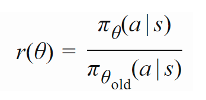

[TOC]
- Title: Proximal Policy Optimisation Explained Blog
- Author: Xiao-Yang Liu; DI engine
- Publish Year: May 4, 2021
- Review Date: Mon, Dec 26, 2022
- Highly recommend reading this blog
Difference between on-policy and off-policy

- For on-policy algorithms, they update the policy network based on the transitions generated by the current policy network. The critic network would make a more accurate value-prediction for the current policy network in common environments.
- For off-policy algorithms, they allow to update the current policy network using the transitions from old policies. Thus, the old transitions could be reutilized, as shown in Fig. 1 the points are scattered on trajectories that are generated by different policies, which improves the sample efficiency and reduces the total training steps.
Question: is there a way to improve the sample efficiency of on-policy algorithms without losing their benefit.
- PPO solves the problem of sample efficiency by utilizing surrogate objectives to avoid the new policy changing too far from the old policy. The surrogate objective is the key feature of PPO since it both 1. regularizes the policy update and enables the 2. reuse of training data.

- 

Algorithm

explanation

Generalized advantage estimator (GAE)

total PPO loss